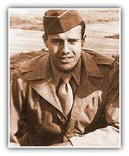

An All-American Boy
Neighbors and friends recall Bob Dole growing up as "an all-American boy." He was an athlete, playing end for the Russell football team, running the 880 in track and playing basketball. He lettered in all three in high school. A friend recalled how Bob "ran to and from school with a brick in either hand to work out." His quick wit and keen sense of humor made him popular with his classmates. His childhood hero was Dwight Eisenhower, a Kansas native. Dole dreamed of becoming a doctor to help the sick and injured. Growing up in small-town Russell instilled respect for honesty, community and patriotism.
World
War II: Heroism and Tragedy
After high school, Dole entered the University of Kansas where he played freshman basketball for the legendary Phog Allen. But just a year into college, the war came.
In 1942, at the age of 19, Bob Dole volunteered for the Army. He became a second lieutenant in the Army's famous 10th Mountain Division, and in the Spring of 1945, he found himself in the hills of Italy fighting the Nazi Germans. On April 14, 1945, Dole's company was launched directly into the enemy line. But a stone wall and a field of land mines trapped them in an exposed area. Suddenly, a German sniper perched in a farmhouse began spraying bullets on Dole's battalion. Dole had to get that gunman. He selected a small group of men to help him take out the sniper and find a safer passage. As he climbed a rocky field, his radioman was hit. Dole crawled across the battlefield on his stomach and pulled the man into a foxhole.

More opportunities. Smaller government. Stronger and safer families
Homepage | Register | Volunteers | Donations
About the Team | Dole Interactive | Newsroom | The Dole Agenda | On the Campaign Trail | Get Involved
Originally Paid for by Dole Kemp '96 Campaign Committee
Original Web Design by Presage Internet Campaigns
To Learn more about Bob Dole, Please Visit the Dole Institute
This Web Site is Presented for Educational Purposes by 4President.org